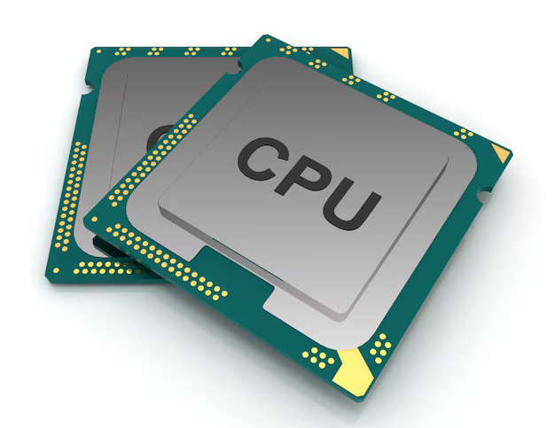
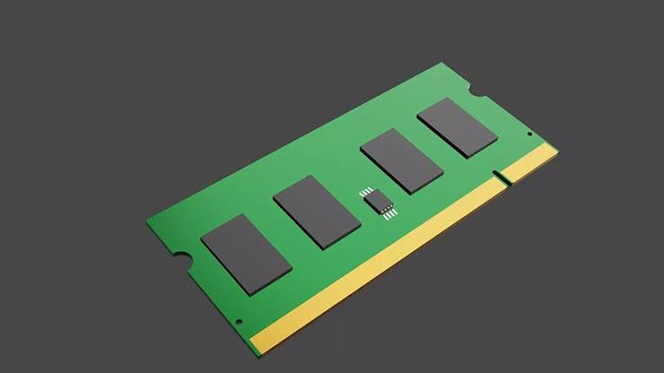
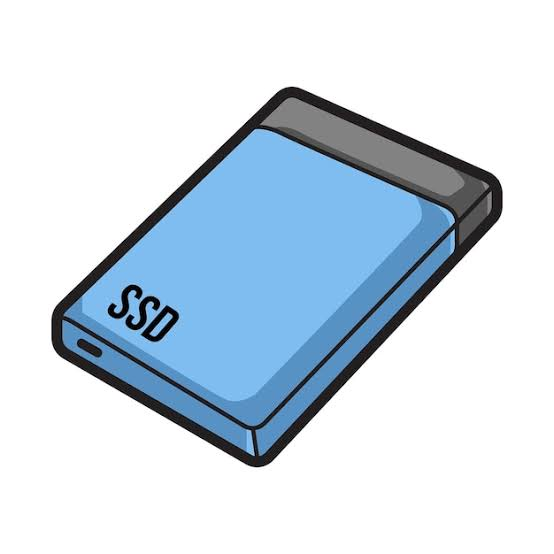
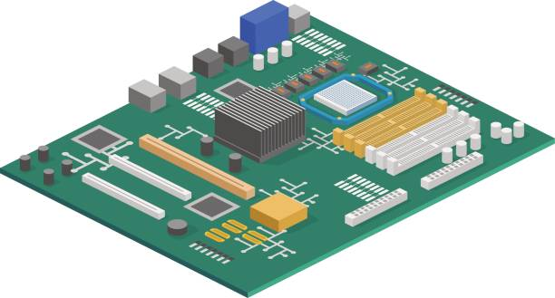

Le processeur (CPU)
Le processeur exécute les instructions des programmes. Il effectue les calculs et coordonne les opérations nécessaires au fonctionnement de l'ordinateur.
Découvrez les composants de votre ordinateur
Le matériel informatique, également appelé hardware, représente l'ensemble des composants physiques d'un ordinateur. Ces composants permettent au système de traiter, stocker et transmettre les informations.
Un ordinateur est constitué de plusieurs éléments essentiels qui fonctionnent ensemble pour assurer son bon fonctionnement.

Le processeur exécute les instructions des programmes. Il effectue les calculs et coordonne les opérations nécessaires au fonctionnement de l'ordinateur.

La RAM conserve temporairement les données utilisées par les applications. Une capacité suffisante facilite l'utilisation de plusieurs programmes simultanément.

Le SSD permet de conserver le système d'exploitation, les logiciels et les fichiers. Il offre généralement des temps d'accès beaucoup plus rapides qu'un disque dur mécanique traditionnel.

La carte mère relie les composants de l'ordinateur. Elle permet notamment au processeur, à la mémoire, au stockage et aux périphériques de communiquer.
Connaître le matériel informatique permet de mieux diagnostiquer les problèmes, de choisir les bonnes pièces et de prolonger la durée de vie d'un ordinateur.
← Retour à l'accueil